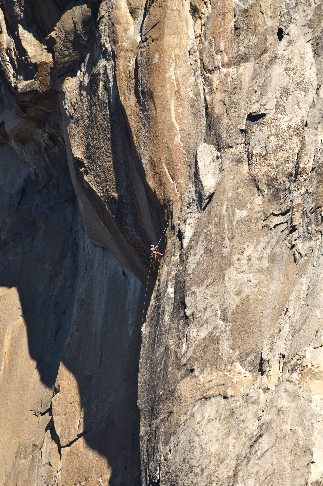
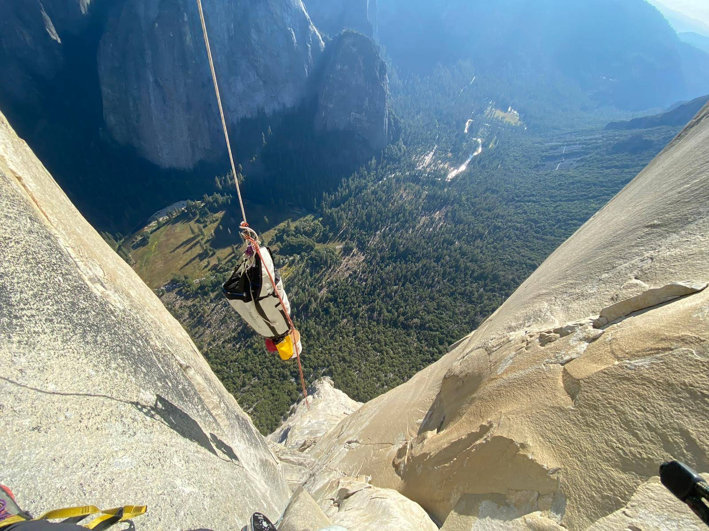
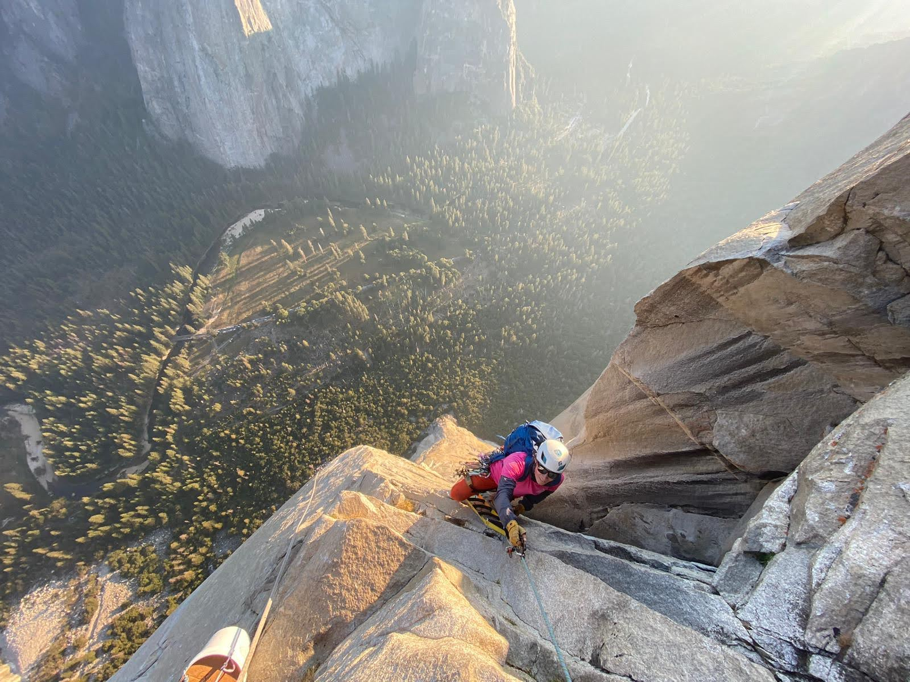
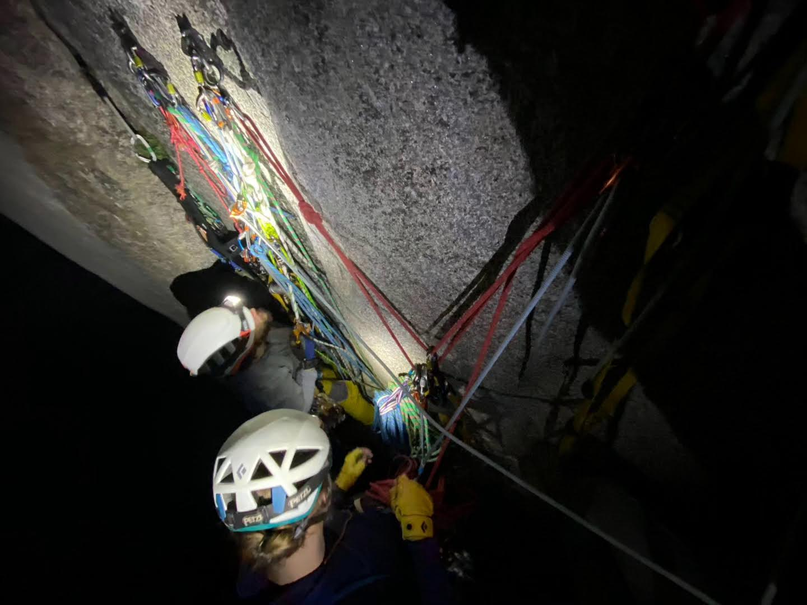
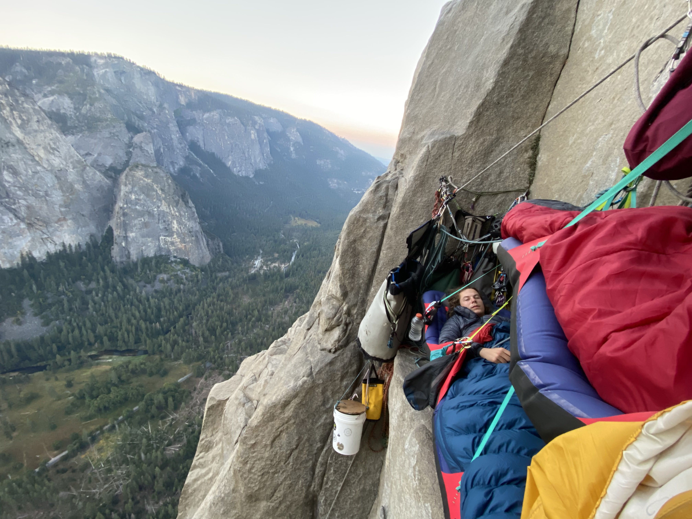
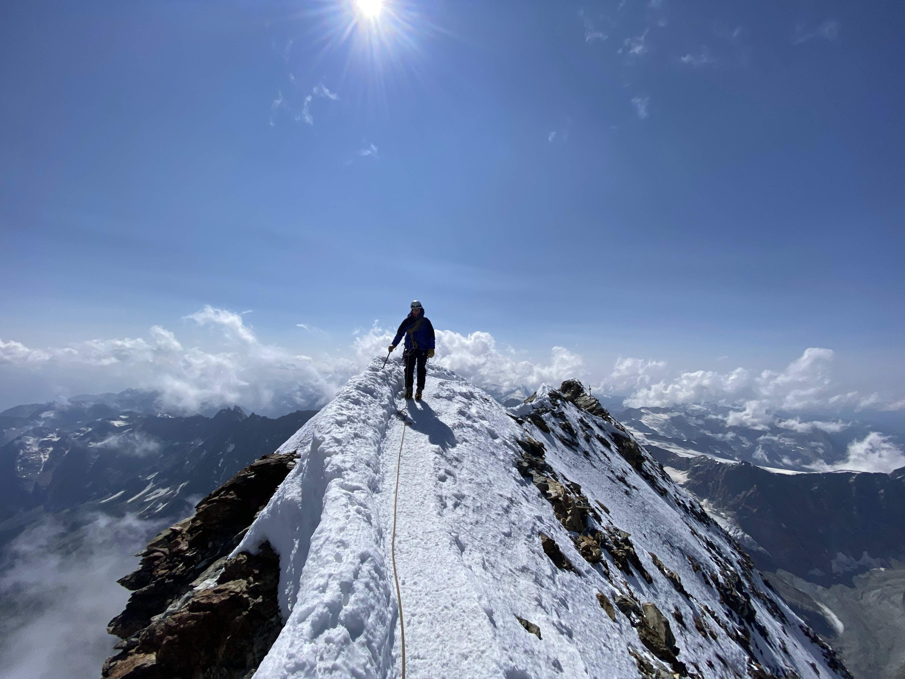
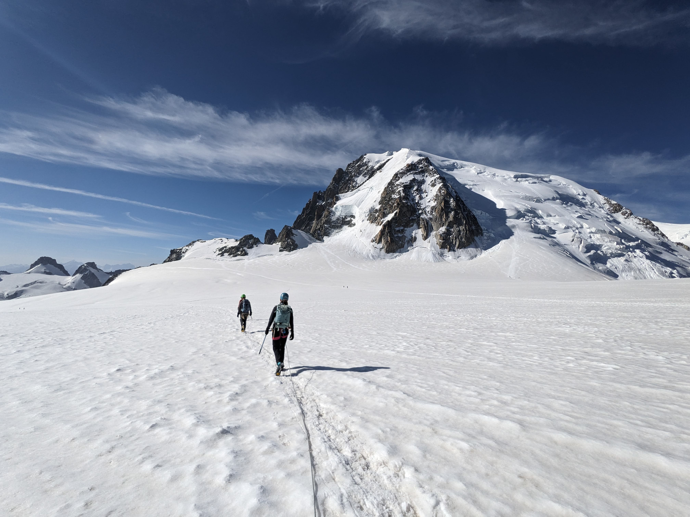
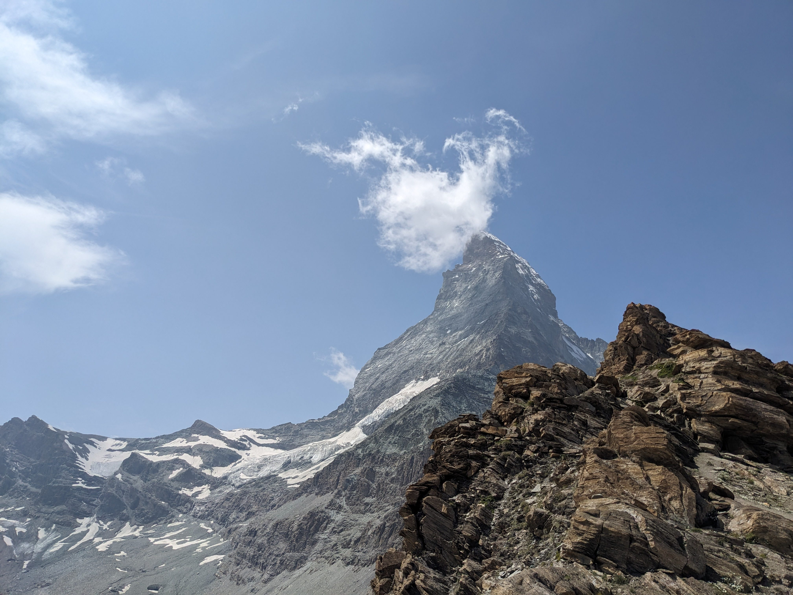
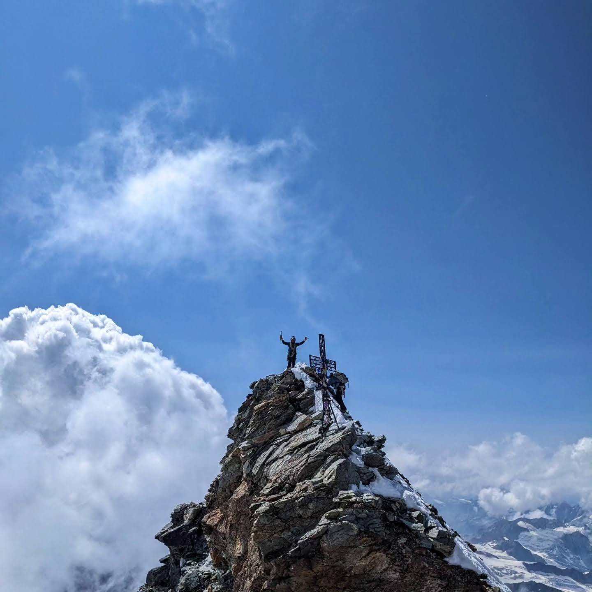
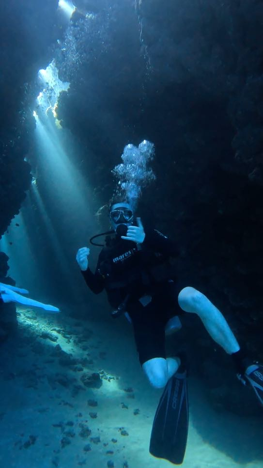

Climbing & Mountaineering
Yosemite
After graduating I spent 6 weeks in Yosemite national park bigwall aid climbing on El Capitan and the surrounding rockfaces. The highlight of the trip was sucessfully completing a 5 day ascent of El Capitan via Triple Direct. It is probably the hardest thing I have done, but getting to live on the wall is well worth it.





Climbing & Mountaineering
European Alps
Before going to Yosemite I spent a month in the alps. After a few weeks taking on ridges and rock routes with glacier approaches, we geared up for an attempt on the Matterhorn. We sucessfully completed the Lion-Hornli traverse summiting the Matterhorn, my first 4000m peak.





Diving
Red Sea
I recently learned to dive on a trip to Egypt.

.jpg)
.jpg)
Film Photography
Film Photography
I like taking photos, I got into shooting film a few years ago so I could learn more about the process of photography. I carry on shooting film mostly because its fun waiting to see the results. I currently use an Olympus OM-10 with a nice Zuiko 28-48mm f4 lens.